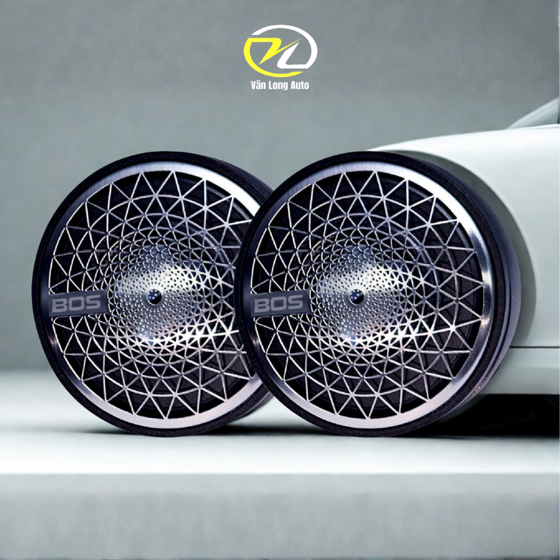
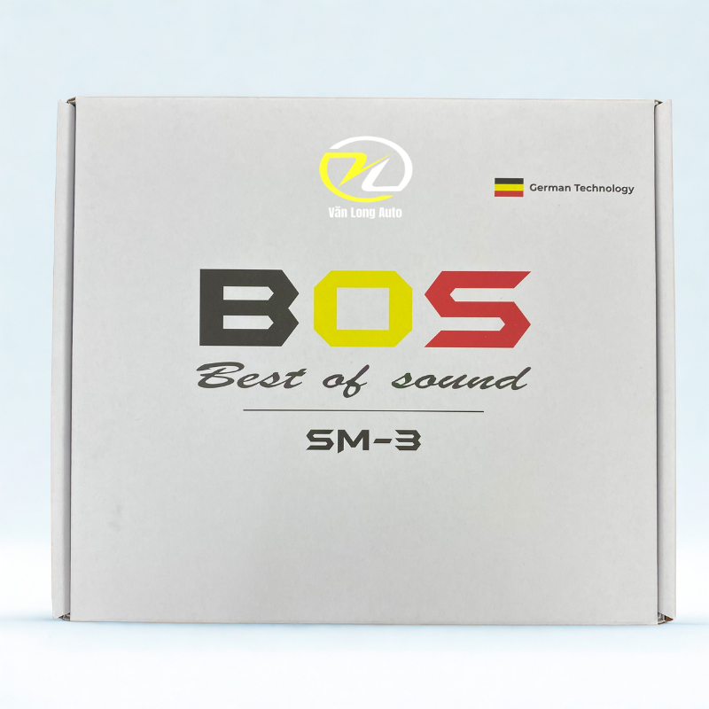
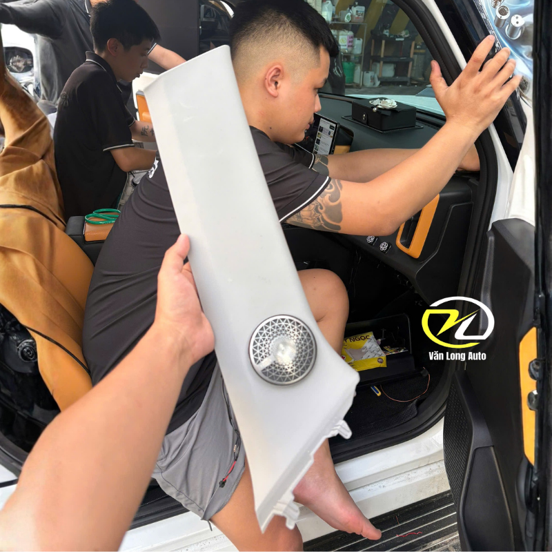

Tổng quan BOS SM3
BOS SM3 được thiết kế để bổ sung rõ hơn phần âm trung và âm cao, giúp giọng hát, nhạc cụ và các chi tiết nhỏ trong bản nhạc trở nên nổi bật hơn so với hệ thống loa nguyên bản.

Thiết kế Mandala tạo điểm nhấn nội thất
Phần vỏ loa sử dụng thiết kế Mandala với các đường cắt trang trí, tạo cảm giác tinh tế và phù hợp với các vị trí lắp nổi trong khoang xe. Kích thước nhỏ giúp việc bố trí linh hoạt hơn.

Bổ sung Mid và Treble rõ ràng hơn
Theo thông tin sản phẩm, BOS SM3 hoạt động trong dải 165Hz–15kHz. Đây là vùng tần số tập trung nhiều vào giọng hát, nhạc cụ và phần âm cao, giúp hệ thống có thêm độ chi tiết và cảm giác sân khấu rõ hơn.

Phù hợp nhiều vị trí lắp đặt
BOS SM3 có thể được bố trí tại mặt taplo, cột A hoặc cánh cửa tùy từng dòng xe và cách triển khai hệ thống âm thanh. Văn Long Auto sẽ kiểm tra vị trí thực tế trước khi thi công.
Lắp đặt & tư vấn cấu hình
- Kiểm tra hệ thống loa nguyên bản trước khi nâng cấp.
- Chọn vị trí taplo, cột A hoặc cánh cửa phù hợp từng xe.
- Ưu tiên thi công gọn gàng và hạn chế ảnh hưởng nội thất nguyên bản.
- Cân chỉnh hệ thống sau lắp đặt để Mid/Treble không bị gắt hoặc lấn dải.